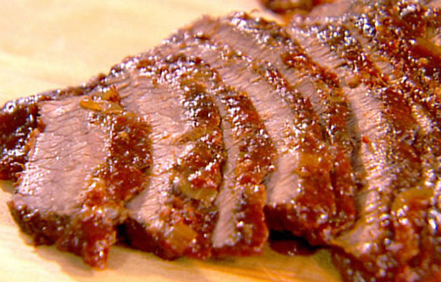

Recetas de la abuela
Deliciosas recetas caseras
Carne al horno con papas

Ingredientes:
- 750gr de Vacío, Asado, Nalga, Peceto, o el corte de su gusto.
- 4 cebollas.
- 1 morrón rojo.
- 1kg de papas blancas o negras.
- Saborizante de carne.
- Caldo de verduras c/n.
- Aceite.
- Mostaza a gusto.
Preparación
- Pelar las papas y cortarlas en rodajas o bastones, a gusto. Blanquearlas, es decir sumergirlas por 4 minutos en agua hirviendo y luego agua fría para parar la cocción. Reservar.
- Limpiar bien la carne, no quitarle del todo la grasa, si la tiene. Huntarla con mostaza, cantidad a gusto y agregarle algo de pimienta, o, si prefiere, puede condimentarla con el caldo saborizador de carne y agregarle un poco de sal y pimienta, sin la mostaza.
- Cortar las cebollas y el morrón en juliana, no tan chica. Reservar.
- En una asadera, forrar la base con un poco de aceite, ubicar la carne en el medio y alrededor las papas. Arriba, poner las cebollas y los morrones. Agregar un poco de orégano fresco, si se tiene.
- Llevar al fuego y agregarle un poco de caldo de verduras. Se debe cocinar a fuego medio controlando que no le falte líquido, pero la idea no es que flote en caldo, sino evitar que se pegue.